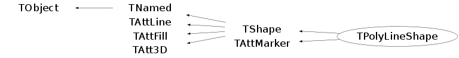

class TPolyLineShape: public TShape, public TAttMarker
STAR 3D geometry Object Model TDataSet Legend: | "classA" | | "classB" is derived from v v the "classA" TVolume "classB" ^ | "classQ" | ^ "classQ" has a pointer TShape | to "classT" | "classT" v | | . . . | V v v v v TPolyLineShape TBRIK TTUBE TPCON TTRD1 | ^ | |R O O T S H A P E S
V | (seeGEANT 3.21 shapes
as well) St_PolyLine3D | | TPoints3DABC | | v V v v v StHits3DPoints StHelix3DPoints TTable3Points TPoints3D StObjArray StTrack / StHelixD TTableSorter flat floating ^ point array | (see St_PolyLine3D as well) | TTable S T A R S H A P E S
Function Members (Methods)
public:
| TPolyLineShape() | |
| TPolyLineShape(const TPolyLineShape&) | |
| TPolyLineShape(TPoints3DABC* points, Option_t* option = "P") | |
| virtual | ~TPolyLineShape() |
| void | TObject::AbstractMethod(const char* method) const |
| virtual void | TObject::AppendPad(Option_t* option = "") |
| virtual void | TObject::Browse(TBrowser* b) |
| static TClass* | Class() |
| virtual const char* | TObject::ClassName() const |
| virtual void | TNamed::Clear(Option_t* option = "") |
| virtual TObject* | TNamed::Clone(const char* newname = "") const |
| virtual Int_t | TNamed::Compare(const TObject* obj) const |
| virtual void | TNamed::Copy(TObject& named) const |
| virtual void | TObject::Delete(Option_t* option = "")MENU |
| Int_t | TAttLine::DistancetoLine(Int_t px, Int_t py, Double_t xp1, Double_t yp1, Double_t xp2, Double_t yp2) |
| virtual Int_t | DistancetoPrimitive(Int_t px, Int_t py) |
| virtual void | Draw(Option_t* opt = "") |
| virtual void | TObject::DrawClass() constMENU |
| virtual TObject* | TObject::DrawClone(Option_t* option = "") constMENU |
| virtual void | TObject::Dump() constMENU |
| virtual void | TObject::Error(const char* method, const char* msgfmt) const |
| virtual void | TObject::Execute(const char* method, const char* params, Int_t* error = 0) |
| virtual void | TObject::Execute(TMethod* method, TObjArray* params, Int_t* error = 0) |
| virtual void | ExecuteEvent(Int_t event, Int_t px, Int_t py) |
| virtual void | TObject::Fatal(const char* method, const char* msgfmt) const |
| virtual void | TNamed::FillBuffer(char*& buffer) |
| virtual TObject* | TObject::FindObject(const char* name) const |
| virtual TObject* | TObject::FindObject(const TObject* obj) const |
| virtual const TBuffer3D& | TShape::GetBuffer3D(Int_t reqSections) const |
| virtual Color_t | GetColorAttribute() const |
| virtual TShape* | GetConnection() const |
| virtual Option_t* | TObject::GetDrawOption() const |
| static Long_t | TObject::GetDtorOnly() |
| virtual Color_t | TAttFill::GetFillColor() const |
| virtual Style_t | TAttFill::GetFillStyle() const |
| virtual const char* | TObject::GetIconName() const |
| virtual Color_t | TAttLine::GetLineColor() const |
| virtual Style_t | TAttLine::GetLineStyle() const |
| virtual Width_t | TAttLine::GetLineWidth() const |
| virtual TPoints3DABC* | GetMarker() const |
| virtual Color_t | TAttMarker::GetMarkerColor() const |
| virtual Size_t | TAttMarker::GetMarkerSize() const |
| virtual Style_t | TAttMarker::GetMarkerStyle() const |
| TMaterial* | TShape::GetMaterial() const |
| virtual const char* | GetName() const |
| virtual Int_t | TShape::GetNumber() const |
| virtual char* | GetObjectInfo(Int_t px, Int_t py) const |
| static Bool_t | TObject::GetObjectStat() |
| virtual Option_t* | TObject::GetOption() const |
| virtual TPoints3DABC* | GetPoints() const |
| virtual TShape* | GetShape() const |
| virtual Size_t | GetSizeAttribute() const |
| virtual Bool_t | GetSmooth() const |
| virtual Style_t | GetStyleAttribute() const |
| virtual const char* | GetTitle() const |
| virtual UInt_t | TObject::GetUniqueID() const |
| Int_t | TShape::GetVisibility() const |
| virtual Float_t | GetWidthFactor() const |
| static Double_t* | Gyrot(Double_t* dirc, Double_t cosang, Double_t sinang, Double_t** trans) |
| virtual Bool_t | TObject::HandleTimer(TTimer* timer) |
| virtual ULong_t | TNamed::Hash() const |
| virtual void | TObject::Info(const char* method, const char* msgfmt) const |
| virtual Bool_t | TObject::InheritsFrom(const char* classname) const |
| virtual Bool_t | TObject::InheritsFrom(const TClass* cl) const |
| virtual void | TObject::Inspect() constMENU |
| void | TObject::InvertBit(UInt_t f) |
| virtual TClass* | IsA() const |
| virtual Bool_t | TObject::IsEqual(const TObject* obj) const |
| virtual Bool_t | TObject::IsFolder() const |
| Bool_t | TObject::IsOnHeap() const |
| virtual Bool_t | TNamed::IsSortable() const |
| virtual Bool_t | TAttFill::IsTransparent() const |
| Bool_t | TObject::IsZombie() const |
| virtual void | TNamed::ls(Option_t* option = "") const |
| void | TObject::MayNotUse(const char* method) const |
| virtual void | TAttLine::Modify() |
| virtual Bool_t | TObject::Notify() |
| void | TObject::Obsolete(const char* method, const char* asOfVers, const char* removedFromVers) const |
| static void | TObject::operator delete(void* ptr) |
| static void | TObject::operator delete(void* ptr, void* vp) |
| static void | TObject::operator delete[](void* ptr) |
| static void | TObject::operator delete[](void* ptr, void* vp) |
| void* | TObject::operator new(size_t sz) |
| void* | TObject::operator new(size_t sz, void* vp) |
| void* | TObject::operator new[](size_t sz) |
| void* | TObject::operator new[](size_t sz, void* vp) |
| TPolyLineShape& | operator=(const TPolyLineShape&) |
| virtual void | Paint(Option_t* opt) |
| virtual void | Paint3d(Option_t* opt) |
| virtual void | PaintNode(Float_t* start, Float_t* end, Option_t* option) |
| virtual void | PaintPoints(Int_t n, Float_t* p = 0, Option_t* opt = "") |
| virtual void | PaintPolyMarker(Int_t n, Float_t* p = 0, Marker_t m = 0, Option_t* opt = "") |
| virtual void | PaintX3DLine(Option_t* opt = "") |
| virtual void | PaintX3DMarker(Option_t* opt = "") |
| virtual void | TObject::Pop() |
| virtual void | TNamed::Print(Option_t* option = "") const |
| static Float_t | Product(Float_t* v1, Float_t* v2, Int_t ndim = 3) |
| static Double_t | Product(Double_t* v1, Double_t* v2, Int_t ndim = 3) |
| virtual Int_t | TObject::Read(const char* name) |
| virtual void | TObject::RecursiveRemove(TObject* obj) |
| virtual void | TAttFill::ResetAttFill(Option_t* option = "") |
| virtual void | TAttLine::ResetAttLine(Option_t* option = "") |
| virtual void | TAttMarker::ResetAttMarker(Option_t* toption = "") |
| void | TObject::ResetBit(UInt_t f) |
| virtual void | TObject::SaveAs(const char* filename = "", Option_t* option = "") constMENU |
| virtual void | TAttFill::SaveFillAttributes(ostream& out, const char* name, Int_t coldef = 1, Int_t stydef = 1001) |
| virtual void | TAttLine::SaveLineAttributes(ostream& out, const char* name, Int_t coldef = 1, Int_t stydef = 1, Int_t widdef = 1) |
| virtual void | TAttMarker::SaveMarkerAttributes(ostream& out, const char* name, Int_t coldef = 1, Int_t stydef = 1, Int_t sizdef = 1) |
| virtual void | TObject::SavePrimitive(ostream& out, Option_t* option = "") |
| void | TObject::SetBit(UInt_t f) |
| void | TObject::SetBit(UInt_t f, Bool_t set) |
| virtual Color_t | SetColorAttribute(Color_t color) |
| virtual Int_t | SetConnection(EShapeTypes connection = kBrik) |
| virtual void | TObject::SetDrawOption(Option_t* option = "")MENU |
| static void | TObject::SetDtorOnly(void* obj) |
| virtual void | TAttFill::SetFillAttributes()MENU |
| virtual void | TAttFill::SetFillColor(Color_t fcolor) |
| virtual void | TAttFill::SetFillStyle(Style_t fstyle) |
| virtual void | TAttLine::SetLineAttributes()MENU |
| virtual void | TAttLine::SetLineColor(Color_t lcolor) |
| virtual void | TAttLine::SetLineStyle(Style_t lstyle) |
| virtual void | TAttLine::SetLineWidth(Width_t lwidth) |
| virtual void | TAttMarker::SetMarkerAttributes()MENU |
| virtual void | TAttMarker::SetMarkerColor(Color_t tcolor = 1) |
| virtual void | TAttMarker::SetMarkerSize(Size_t msize = 1) |
| virtual void | TAttMarker::SetMarkerStyle(Style_t mstyle = 1) |
| virtual void | TShape::SetName(const char* name) |
| virtual void | TNamed::SetNameTitle(const char* name, const char* title) |
| static void | TObject::SetObjectStat(Bool_t stat) |
| virtual void | TShape::SetPoints(Double_t* points) const |
| virtual void | SetShape(TShape* shape) |
| virtual Size_t | SetSizeAttribute(Size_t size) |
| virtual void | SetSmooth(Bool_t smooth = kTRUE) |
| virtual Style_t | SetStyleAttribute(Style_t style) |
| virtual void | TNamed::SetTitle(const char* title = "")MENU |
| virtual void | TObject::SetUniqueID(UInt_t uid) |
| virtual void | TShape::SetVisibility(Int_t vis)MENU |
| virtual void | SetWidthFactor(Float_t fact = 1.0) |
| virtual void | ShowMembers(TMemberInspector& insp) |
| virtual Int_t | Size() const |
| virtual Int_t | TNamed::Sizeof() const |
| virtual void | Sizeof3D() const |
| virtual void | Streamer(TBuffer& b) |
| void | StreamerNVirtual(TBuffer& b) |
| virtual void | TObject::SysError(const char* method, const char* msgfmt) const |
| Bool_t | TObject::TestBit(UInt_t f) const |
| Int_t | TObject::TestBits(UInt_t f) const |
| void | TShape::TransformPoints(Double_t* points, UInt_t NbPnts) const |
| virtual void | TObject::UseCurrentStyle() |
| virtual void | TObject::Warning(const char* method, const char* msgfmt) const |
| virtual Int_t | TObject::Write(const char* name = 0, Int_t option = 0, Int_t bufsize = 0) |
| virtual Int_t | TObject::Write(const char* name = 0, Int_t option = 0, Int_t bufsize = 0) const |
protected:
| virtual void | Create() |
| virtual _x3d_sizeof_* | CreateX3DSize(Bool_t marker = kFALSE) |
| virtual void | TObject::DoError(int level, const char* location, const char* fmt, va_list va) const |
| virtual void | TShape::FillBuffer3D(TBuffer3D& buffer, Int_t reqSections) const |
| Int_t | TShape::GetBasicColor() const |
| void | TObject::MakeZombie() |
| virtual Int_t | PointDistancetoPrimitive(Int_t px, Int_t py) |
| virtual void | SetConnection(TShape* connection) |
| Int_t | TShape::ShapeDistancetoPrimitive(Int_t numPoints, Int_t px, Int_t py) |
Data Members
public:
| enum TObject::EStatusBits { | kCanDelete | |
| kMustCleanup | ||
| kObjInCanvas | ||
| kIsReferenced | ||
| kHasUUID | ||
| kCannotPick | ||
| kNoContextMenu | ||
| kInvalidObject | ||
| }; | ||
| enum TObject::[unnamed] { | kIsOnHeap | |
| kNotDeleted | ||
| kZombie | ||
| kBitMask | ||
| kSingleKey | ||
| kOverwrite | ||
| kWriteDelete | ||
| }; |
protected:
| TShape* | fConnection | shape to represent the each "end" of the polyline |
| Color_t | TAttFill::fFillColor | fill area color |
| Style_t | TAttFill::fFillStyle | fill area style |
| Bool_t | fHasDrawn | flag to avoid multiply plots |
| Color_t | TAttLine::fLineColor | line color |
| Bool_t | fLineFlag | Flag whether we should connect the points with "line" (option "L") |
| Style_t | TAttLine::fLineStyle | line style |
| Width_t | TAttLine::fLineWidth | line width |
| Color_t | TAttMarker::fMarkerColor | Marker color index |
| Size_t | TAttMarker::fMarkerSize | Marker size |
| Style_t | TAttMarker::fMarkerStyle | Marker style |
| TMaterial* | TShape::fMaterial | Pointer to material |
| TString | TNamed::fName | object identifier |
| Int_t | TShape::fNumber | Shape number |
| Bool_t | fPointFlag | Flag whether we should paint "points" (option "P") |
| TPoints3DABC* | fPoints | PolyLine itself |
| TShape* | fShape | shape for draw each segment of the polylins |
| EShapeTypes | fShapeType | shape of the segment connections |
| _x3d_sizeof_* | fSizeX3D | ! the X3D buffer sizes |
| Bool_t | fSmooth | Make smooth connections |
| TString | TNamed::fTitle | object title |
| Int_t | TShape::fVisibility | Visibility flag |
| Float_t | fWidthFactor | factor to calculate the the tube diameters |
Class Charts
{kind=link}
{kind=link}
{kind=link}
{kind=link}

Function documentation
TPolyLineShape(TPoints3DABC* points, Option_t* option = "P")
Int_t DistancetoPrimitive(Int_t px, Int_t py)
-*Compute distance from point px,py to a 3-D polyline *-* =================================================== - *-* Compute the closest distance of approach from point px,py to each segment *-* of the polyline. *-* Returns when the distance found is below DistanceMaximum. *-* The distance is computed in pixels units. -
Int_t PointDistancetoPrimitive(Int_t px, Int_t py)
Compute distance from point px,py to a 3-D points *-* ===================================================== - *-* Compute the closest distance of approach from point px,py to each segment *-* of the polyline. *-* Returns when the distance found is below DistanceMaximum. *-* The distance is computed in pixels units. - -
void ExecuteEvent(Int_t event, Int_t px, Int_t py)
forward the ExecuteEvent call to the decorated object
char * GetObjectInfo(Int_t px, Int_t py) const
forward the GetObjectInfo call to the decorated object
void PaintPoints(Int_t n, Float_t* p = 0, Option_t* opt = "")
Draw this 3-D polyline with new coordinates*- *-* ===========================================
void PaintPolyMarker(Int_t n, Float_t* p = 0, Marker_t m = 0, Option_t* opt = "")
-*Paint polymarker in CurrentPad World coordinates *-* ================================================
Double_t * Gyrot(Double_t* dirc, Double_t cosang, Double_t sinang, Double_t** trans)
call gyrot(dirc,angp,trans,ntrans) vp 880722 revised vp 921009 revised (f->c++) vf 981006 routine for filling rotation transformation matrix from axis and rotation angle around arguments: dirc direct cosinuses (may be not normalised) cosang, sinang - cos and sin of the rotation angle tranz rotation & shift matrix 3*3 (input/output) This code is provided by Victor Perevoztchikov
Style_t SetStyleAttribute(Style_t style)
SetStyleAttribute(Style_t style) - set new style for this line Returns: previous value of the line style
void Sizeof3D() const
-*Return total X3D size of this shape with its attributes *-* =======================================================